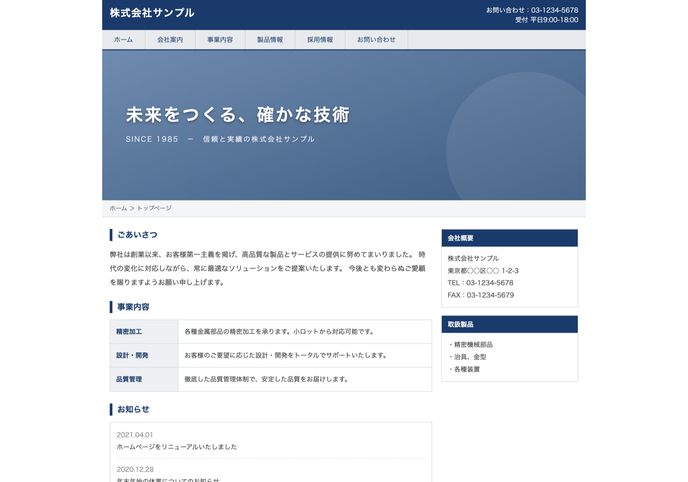
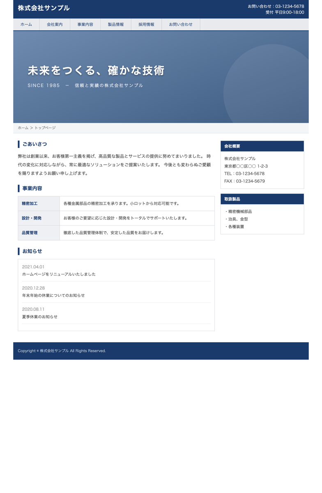

株式会社サンプル
齋藤 勇 様
このたびは無料Web診断をご利用いただきありがとうございます。
実際に御社サイトを拝見し、どこから、どう直すかをまとめました。

平均的な状態です。
直したぶんだけ、結果が出やすい。
大きく作り込まれた部分と、手つかずの部分がはっきり分かれています。
特に次のページでお見せするスマホでの見え方は、
いま問い合わせを取りこぼしている可能性が高い箇所です。
全部を直す必要はありません。効果の大きい3つに絞ってご説明します。
点数が低い順ではなく、直したときの効果が大きい順に手をつけるのが近道です。 そのため最優先はスマホ対応（38点）ではなく、問い合わせのしやすさ（41点）になります。
診断は自動ですが、このページは実際の表示を撮影して確認したものです。
実際にスマホ幅で表示したものです。

スマホ用の基本設定（viewport）が入っていないため、 PC用の横幅900pxの画面が、そのまま手のひらサイズに縮められています。 拡大しないと本文が読めません。
いまサイトを見る方の多くはスマホです。 せっかく興味を持って開いた方が、読む前に離れている 可能性が高い状態です。
※ 左は実際の表示をそのまま撮影したものです（加工していません）
この順番で手をつけるのがおすすめです。3つとも、いま取りこぼしている問い合わせに直結する箇所です。
最初の画面に、問い合わせボタンを置く
なぜ問題か
読んで納得した直後に押す先がないと、その気持ちは次のページで冷めてしまいます。 御社サイトは事業内容がしっかり書かれているぶん、この一点で機会を逃しています。
どう直すか
最初の画面・事業内容の直後・ページ末尾の3箇所に、同じボタンを置きます。 文言は「送信」ではなく「無料で相談する」のように、 押した先で何が起きるかが分かる言葉にしてください。
スマホで読める状態にする
なぜ問題か
2ページ目のとおり、PC版がそのまま縮小されて表示されています。 閲覧の大半がスマホである以上、影響が最も直接的に出ます。
どう直すか
まず viewport の設定を1行追加します。ただしこれは入口で、 御社サイトはレイアウト自体がPC幅（900px固定）を前提に作られているため、 設定だけでは崩れが残ります。スマホ幅での組み直しが必要です。
最初の見出しで、何屋かを伝える
なぜ問題か
現在の見出しは「未来をつくる、確かな技術」で、何を扱う会社かが読み取れません。 「精密加工」という強みが、下までスクロールしないと現れない状態です。
どう直すか
「誰の・どんな悩みを・どう解決するか」を1文で置きます。 たとえば「小ロットの精密金属加工を、1個から承ります」のように、 抽象語を具体的な事実に置き換えてください。文言の修正だけで済みます。
上の3つを直した場合の、診断ロジック上の再計算値です。
※ 同じ採点基準で計算し直した数値です。問い合わせ件数を保証するものではありません。
いずれも上の3つを直したあとで問題ありません。
今回の減点は、文言や画像の差し替えでは届かない部分（構造・スマホ対応）に集中しています。 特にレイアウトが900px固定で組まれているため、部分的な修正を重ねるより、 土台から作り直したほうが結果的に早く・安くなるケースです。
このレポートへのご質問だけでも構いません。売り込みはいたしません。
https://plugdo.jp/contact/
Plugdo（株式会社ハンチス）
担当：齋藤 勇
全国対応・オンライン完結／https://plugdo.jp
本レポートは、plugdo.jp のWeb診断にお申し込みいただいた方にお送りしています。
記載の内容は{診断日}時点のサイトを対象としています。